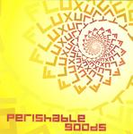

| Artist: | Fluxury |
| Title: | Perishable Goods |
| Label: | self produced FLOS02 |
| Length(s): | 59 minutes |
| Year(s) of release: | 2005 |
| Month of review: | [03/2006] |
| 1) | Me, The Enemy | 4.41 |
| 2) | After The Revolution | 2.49 |
| 3) | Safety First | 5.05 |
| 4) | Light Of Other Days | 6.07 |
| 5) | I Will Be There | 2.47 |
| 6) | Surrender | 2.37 |
| 7) | Dust Settled Down | 4.40 |
| 8) | Perishable Goods | 10.19 |
| 9) | Symmetry | 1.43 |
| 10) | Nothing's Safe | 6.41 |
| 11) | Heaven And Hell | 8.04 |
| 12) | Panta Rei | 2.36 |
After The Revolution is sung by Patricia Beerens, a ballad with some more powerful elements. The overall feel is one of sadness. Beerens has a bit warmer voice than Van Tongeren, who would do well, for instance, in a New Wave/pop band. The material continues to quite accessible and not very proggy. Genesis can be felt in the opening of Safety First, with plenty of threat and mystery. Maybe even a hint of Crimson here. This is indeed typical neo-prog material. Sometimes I do get the impression that the production could be improved. The slow, somewhat wailing guitar is the dominant instruments on this song, dragging the relatively slow song along. There is a hint of Hackett in there.
Light Of Other Days is like Me, The Enemy a track from the promotional mini. The song is more stately, classically minded than earlier songs, with a good vocal melody, and strong washes of keyboards. Although the singing is more than vocalization, and the sound is a bit less classical, I was reminded of Karda Estra, but mainly Renaissance (even if Thea van Rijen is no Annie Haslam, she still does well enough).
Time for a few shorter tunes, starting with I Will Be There, which reminds me strongly of Me, The Enemy. In fact, the verse for this song is the same as the first verse of Me, The Enemy. Next up is the instrumental Surrender. This is a slow moving piece, filled with keyboards and synthetic strings. Again, like Karda Estra, but synthetic. Melodically, this is fine work.
Dust Settled Down is similar to After The Revolution, but now the latter, earlier track, is a short version of the former. What's the idea behind this repetition, although admittedly the lyrics are sung somewhat differently? I think I like the vocals of After The Revolution better, now the singer seems to sing slower simply to avoid the similarity. Instrumentally, I get the impression that the band is still a bit too careful while they play: as if afraid of making a mistake, they approach with trepidation, so that the flow (synergy, I hate that word, of the musicians if you like) is not what it could be. But maybe this is part of their style.
After the melodious, and relatively soft tracks, Perishable Goods is a funkier song. Although the chorus is memorable enough, I still find a lack of chemistry here, of the band really working together. I am also not that fond of the vocals. Just after three minutes, the song takes on a different character with piano taking the lead. Indeed we are back in the Hackettish, Karda Estra like passages, with a careful, classical feel. I must admit, the band seems most at home here. Then the vocal of the opening return for a spell, after which the electric guitar takes the lead. The harmony vocals are rather sloppy. The power is turned on in places here, building up to a climax.
Symmetry is an interlude after which we come to Nothing's Safe. Piano and keyboards take the lead on this beat rich song, while the guitars are rather heavy (for this band at least). The vocal melodies, sung by Marjolein van Tongeren harken back to the Genesis inspired Safety First. The vocal style, also of vocalist Witsenburg, can be likened to the vocalist of Thinking Plague, although less extreme. They do have the type of voice that goes with American avant garde. The song has a strong finale.
Heaven And Hell is one of the longer song on the album. The guitars are again the focal point, beside the male plus female vocals. The overall feel reminds me most of Hackett and Genesis again, but, also again, there is a strong classical feel as well. The music has enough melody, and hey there we hear some well-known lyrics again. The conclusion is, melodically, a bit too sugary. Panta Rei is a moody instrumental closer, recalling some of the melodies of the album.
The style of the band is elements of Genesis/Hackett solo with a strong dose of classical influences, like in Karda Estra's music. However, the classical elements here are synthetic, which is not a problem though. The band uses many vocalists, that are at least adequate. I think I would have liked a singer who sings with more feeling. Now the music often has this distant, New Wave feel. The music itself is very melodious, and in places the band also utilizes moods in the music (similar to film music). It seems to me with all the repetition of phrases, melodies throughout the album, that this is a concept of sorts, but I did not discover the concept. Best song for me was Light Of Other Days, weakest was the title track. The band has an identity of their own, and still room to grow, which makes me all the more curious to what they offer next.